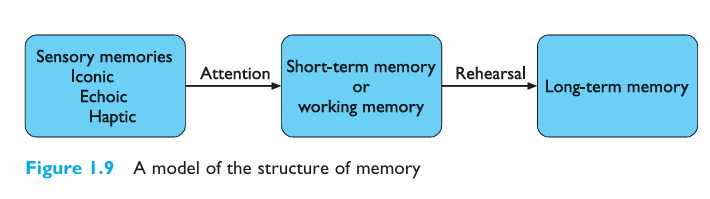

Human Memory:
In the first week, we learned about human memory (For how much time a human memory can retain information), each
student was told to make a table about that.
We learned that whenever a human focuses on something and does practice of it ,it gets stored in long term
memory.(Chap 1 pg.28 fig 1.9) Shows a model
structure of memory. It shows how a human stores information from sensory memory to short term memory and then
to long term memory with the help of attention
and rehersal. Sensory memory briefly stores raw sensory inputs like visiuals and touch. Short term memory
temporarily holds and manipulates information.
While long term memory stores information permenantly. It includes Episodic(events and experiences)memory and
semantic(facts, concepts, skills) memory.

UI(User Interface) vs UX(User Experience):
UI are the access point where the user interacts with design. It involves visiual design, colors, typography,
layout, and interactive elements. UX is about overall experience user
has while interacting with UI. It focuses on interaction design, wireframes, prototypes, and usability
(Explained in Class). UI UX plays an important role
in human Computer Interaction. The first human computer interaction was done in 1973.
Fitz's Law:
The time required to move to a target depends on the distance to the target and the size of the
target.
Fitz law dictates that closer targets are faster to click where as Closer and Bigger targets are faster and easy
to click. In UI design the best practice would be
to have large button according to screen size with important button near to the user (usually placed at corner
because they are faster and easy to reach). It optimizes
the spped and accuracy of selecting targets.
Miller's Law:
The average human can hold about 7 ± 2 items in short-term memory.
This law only applies to working
memory, where we store the information, we are actively using. If
you hear someone suggest that a menu should have less than 7
items because of Miller’s law, you can kindly explain that a menu
does not burden working memory since it can be readily seen on
the screen.
Human can remember 5 to 9 things at one time so according to that a desinger should design UI in such a way that
a human could remember it easily like a desinger
should avoid adding too many options in menu, Group information (chunking), and avoid information overload.
(Source ~Week_1_HCI_CG.pdf Slide-50)